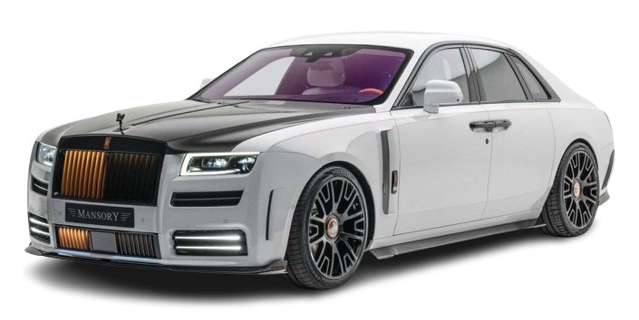

Rolls-Royce Ghost
Les Rolls-Royce sont les voitures les plus luxueuses du monde. Parmi eux, le Rolls Royce Ghost est le model le plus reconnu mondialement. Toutes les Rolls Royce Ghost sont construites en Angleterre. La marques maintenant se trouve sous le contrôle de BMW. Chez le groupe BMW, c’est le deuxième Rolls Royce qui a était fait sous leur direction, avant le Ghost il avait le Phantom qui était le premier véhicule conçus et reconstruit par BMW.
Tous les Rolls-Royce ont une procédure vraiment compliquer lorsqu’ils sont construits en Angleterre. Chaque voiture est faite à mains, à la première construction la voitures doit passer des tests pour être certifier. La voitures est ensuite démonter vérifier et reconstruit à nouveau.
Le Rolls-Royce Ghost a un moteur V12 qui peut donner jusqu’à 570 chevaux, cette puissance est nécessaire car le véhicule à vide a une masse de presque 3 tonnes.
